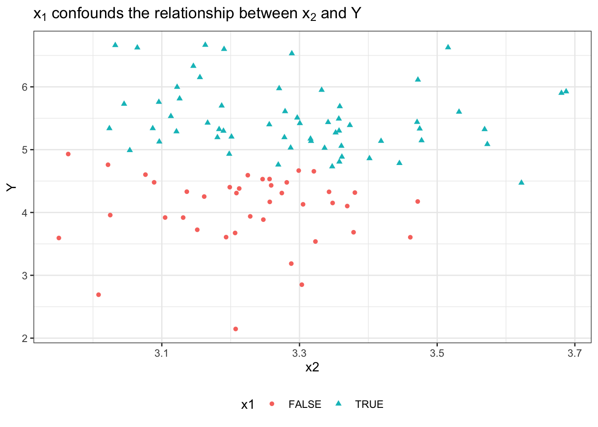
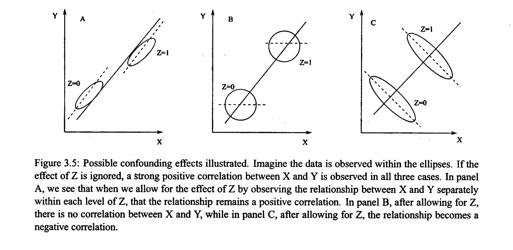
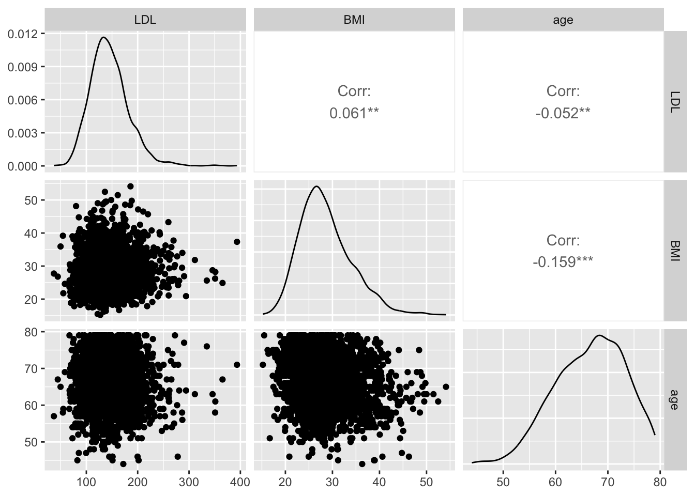
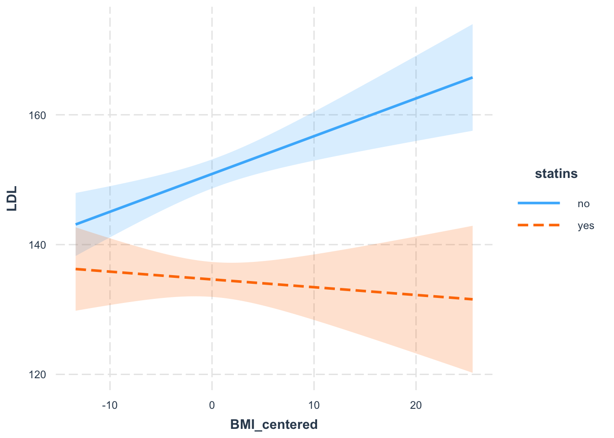
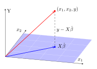
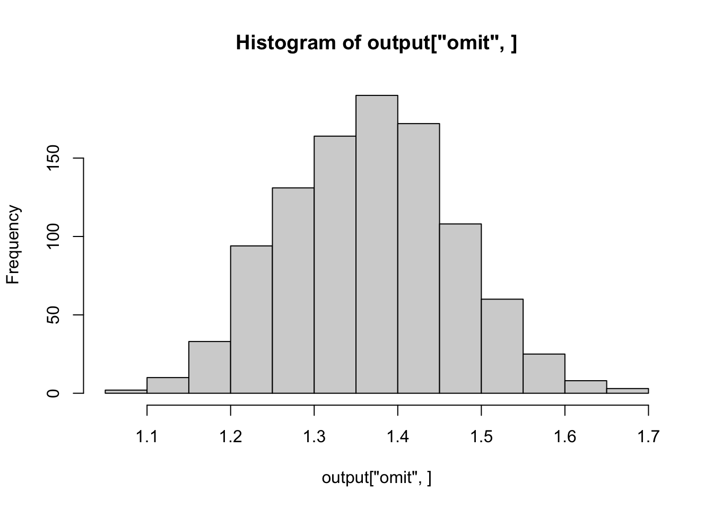
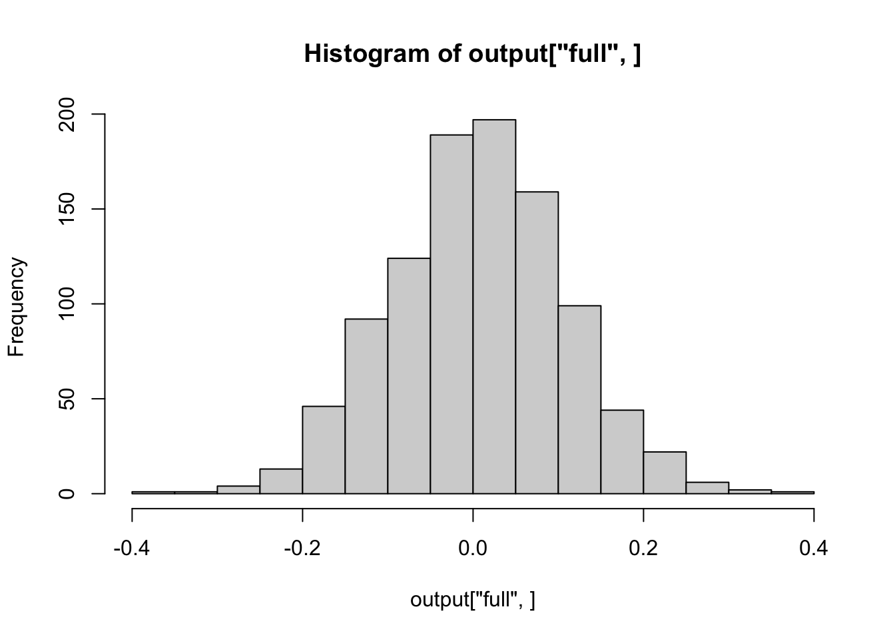
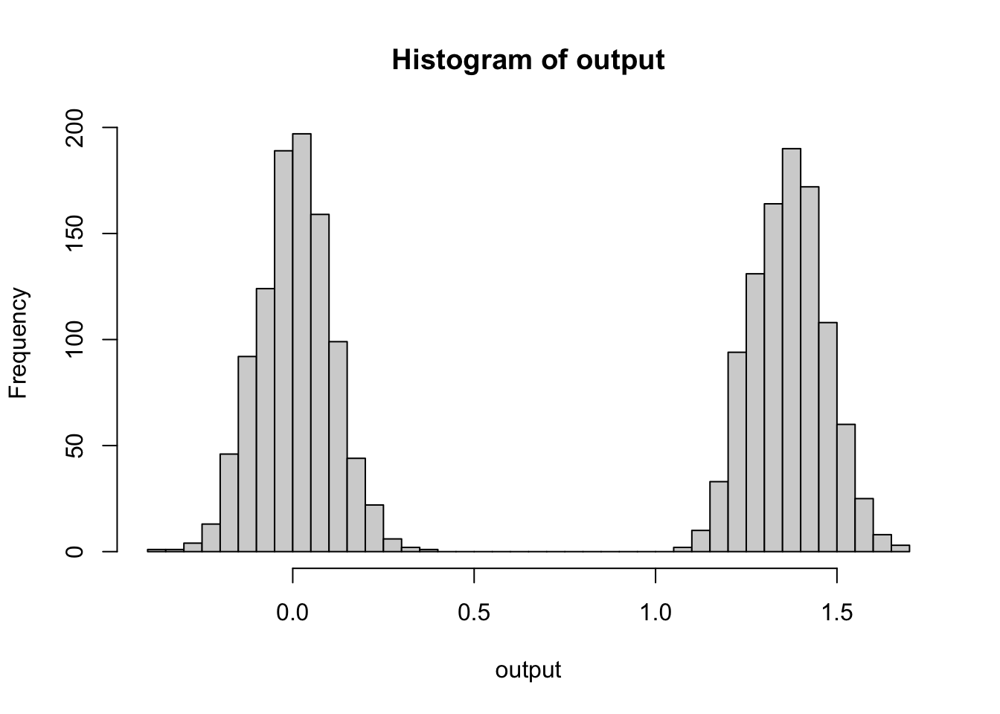

x2 <- rnorm(n = 100, mean = 3.25, sd = .15)
Y <- x2*1.5 + rnorm(n = 100)
x1 <- (x2 + Y > 8)Week 2
Recap
Equivalent forms of the canonical linear model:
Assuming \(\mathbb E[\epsilon_i] = 0\), \(\text{Var}(\epsilon_i) = \sigma^2\), \(\text{Cov}(\epsilon_i, \epsilon_i') = 0\).
Scalar notation: \[ Y_i = \beta_0 + \beta_1 x_{i1} + ... + \beta_p x_{ip} + \epsilon_i\]
Vector notation
\[ Y_i = x_i' \beta + \epsilon_i\]
Expectation representations
\[\mathbb E(Y_i) = \beta_0 + \beta_1 x_{i1} + ... + \beta_p x_{ip}\] \[\mathbb E(Y_i) = x_i' \beta\]
Parameter interpretation: the \(\beta\) values represent the change in expected value per unit change in \(x\) holding the remaining predictors constant.
Best practices:
- Always include an intercept, even if it’s not interpretable or of substantive interest.
- For \(K\)-category predictors, include \(K-1\) indicators in regression (leads to ANOVA-like situations).
- If relationships are suspected to be nonlinear, can include polynomial or other nonlinear terms.
Confounding
Given an outcome \(Y\) and two covariates \(x1\) and \(x2\), should we include \(x1\) in the model?
Suppose we didn’t see the data generation process:
But we could see marginal associations:
library(tidyverse)── Attaching core tidyverse packages ──────────────────────── tidyverse 2.0.0 ──
✔ dplyr 1.1.2 ✔ readr 2.1.4
✔ forcats 1.0.0 ✔ stringr 1.5.0
✔ ggplot2 3.4.2 ✔ tibble 3.2.1
✔ lubridate 1.9.2 ✔ tidyr 1.3.0
✔ purrr 1.0.1
── Conflicts ────────────────────────────────────────── tidyverse_conflicts() ──
✖ dplyr::filter() masks stats::filter()
✖ dplyr::lag() masks stats::lag()
ℹ Use the conflicted package (<http://conflicted.r-lib.org/>) to force all conflicts to become errorsggplot(data.frame(), aes(x = x2, y = Y, color = x1, shape = x1)) +
geom_point() +
theme_bw() +
theme(legend.position = 'bottom') +
ggtitle(expression(paste(x[1], " confounds the relationship between ",
x[2], " and ", Y)))
Which would show us that \(x_1\) is associated with both \(x_2\) and \(Y\).
Fitting a model with both \(x_1\) and \(x_2\), we would call the prediction of \(Y\) given \(x_2\) the conditional association between \(x_2\) conditional on (or within levels of) \(x_1\).
# observe that the association flips
jtools::summ(lm(Y ~ x2))| Observations | 100 |
| Dependent variable | Y |
| Type | OLS linear regression |
| F(1,98) | 0.83 |
| R² | 0.01 |
| Adj. R² | -0.00 |
| Est. | S.E. | t val. | p | |
|---|---|---|---|---|
| (Intercept) | 3.16 | 1.92 | 1.64 | 0.10 |
| x2 | 0.54 | 0.59 | 0.91 | 0.36 |
| Standard errors: OLS |
jtools::summ(lm(Y ~ x1 + x2))| Observations | 100 |
| Dependent variable | Y |
| Type | OLS linear regression |
| F(2,97) | 83.18 |
| R² | 0.63 |
| Adj. R² | 0.62 |
| Est. | S.E. | t val. | p | |
|---|---|---|---|---|
| (Intercept) | 5.83 | 1.20 | 4.87 | 0.00 |
| x1TRUE | 1.48 | 0.12 | 12.81 | 0.00 |
| x2 | -0.55 | 0.37 | -1.49 | 0.14 |
| Standard errors: OLS |
This figure shows some types of bivariate confounding:

Examples of confounding in the HERS data:
How is a woman’s LDL cholesterol level associated with her body mass index (BMI)?
In the HERS data, women with higher BMI tend to have higher LDL levels. However, interpreting this simple marginal association as causal might be misleading because
- Older women in HERS have both lower BMI and lower LDL levels;
- Ethnic background, as well as whether a woman smokes or drinks, also predict both higher BMI and higher LDL levels.
Thus BMI, the risk factor of interest, is associated with a number of other factors, or potential confounders, which also predict the outcome.
library(here)
hers <- readr::read_csv(here("data/hers.csv"))
# just visualized to see how difficult it is to observe confounding
GGally::ggpairs(hers, columns = c('LDL', 'BMI', 'age'), alpha = .5)
Often we will just fit separate models for each of the pairwise models:
simple_summ <-
function(model) {
jtools::summ(model, model.info = F, model.fit = F)
}
simple_summ(lm(data = hers, formula = LDL ~ age))| Est. | S.E. | t val. | p | |
|---|---|---|---|---|
| (Intercept) | 164.83 | 7.25 | 22.73 | 0.00 |
| age | -0.30 | 0.11 | -2.74 | 0.01 |
| Standard errors: OLS |
simple_summ(lm(data = hers, formula = LDL ~ BMI))| Est. | S.E. | t val. | p | |
|---|---|---|---|---|
| (Intercept) | 133.19 | 3.79 | 35.11 | 0.00 |
| BMI | 0.42 | 0.13 | 3.18 | 0.00 |
| Standard errors: OLS |
simple_summ(lm(data = hers, formula = BMI ~ age))| Est. | S.E. | t val. | p | |
|---|---|---|---|---|
| (Intercept) | 37.40 | 1.05 | 35.78 | 0.00 |
| age | -0.13 | 0.02 | -8.48 | 0.00 |
| Standard errors: OLS |
simple_summ(lm(data = hers, formula = LDL ~ BMI + age))| Est. | S.E. | t val. | p | |
|---|---|---|---|---|
| (Intercept) | 151.44 | 8.77 | 17.26 | 0.00 |
| BMI | 0.37 | 0.13 | 2.78 | 0.01 |
| age | -0.25 | 0.11 | -2.31 | 0.02 |
| Standard errors: OLS |
In the marginal model \(LDL ~ BMI\), we had an effect estimate for BMI of 0.42 vs. 0.37 in the model with both BMI and age. So we could say there was a 12% decrease in \(\hat \beta_{BMI}\).
A commonly used rule of thumb is that a variable is a confounder if it changes the estimated associations of interest by >10%. However, this is a really arbitrary threshold, so when available substantive knowledge should be the primary consideration for selecting confounders a priori to any analyses. Moreover, these types of heuristic criteria are specific to linear regression and they change for other types of models (e.g., logistic models for binary outcomes).
We could condition on a few more variables that we might suspect are possible confounders:
simple_summ(lm(LDL ~ BMI + age + nonwhite + drinkany + smoking, data = hers))| Est. | S.E. | t val. | p | |
|---|---|---|---|---|
| (Intercept) | 147.32 | 9.26 | 15.91 | 0.00 |
| BMI | 0.36 | 0.13 | 2.68 | 0.01 |
| age | -0.19 | 0.11 | -1.68 | 0.09 |
| nonwhiteyes | 5.22 | 2.32 | 2.25 | 0.02 |
| drinkanyyes | -2.72 | 1.50 | -1.82 | 0.07 |
| smokingyes | 4.75 | 2.21 | 2.15 | 0.03 |
| Standard errors: OLS |
The effect for \(\hat \beta_{BMI}\) didn’t change very much, so we can presume that these additional variables are not meaningful confounders of the \(LDL ~ BMI\) relationship.
Interaction
We may be interested in a model with interaction effects:
\[ \mathbb E(Y_i) = \beta_0 + \beta_1 x_{i1} + \beta_3 x_{i1} x_{i2}\]
We can alternatively view this model as
\[ \mathbb E(Y_i) = (\beta_0 + \beta_2 x_{i2}) + (\beta_1 + \beta_3 x_{i2})x_{i1} + \epsilon_i.\]
(or switch the roles of \(x_{i1}\) and \(x_{i2}\). Interactions are also sometimes referred to as effect-modification.
Generally it’s considered best practice whenever including interaction terms to include the main-effects for any interacted variables as well. Sometimes in economics literature, main effects may be referred to as “constitutive effects”.
Statin-Use Example
For example, we might ask if the association between LDL and BMI differ between those who take statins (cholesterol lowering medications) vs. those who do not?
We center BMI so that the Statin coefficient is meaningful.
hers$BMI_centered <- hers$BMI - mean(hers$BMI, na.rm=TRUE)
simple_summ(lm(
LDL ~ BMI_centered * statins +
age + smoking + drinkany + nonwhite,
data = hers
))| Est. | S.E. | t val. | p | |
|---|---|---|---|---|
| (Intercept) | 162.41 | 7.58 | 21.42 | 0.00 |
| BMI_centered | 0.58 | 0.16 | 3.64 | 0.00 |
| statinsyes | -16.25 | 1.47 | -11.07 | 0.00 |
| age | -0.17 | 0.11 | -1.56 | 0.12 |
| smokingyes | 3.11 | 2.17 | 1.44 | 0.15 |
| drinkanyyes | -2.08 | 1.47 | -1.42 | 0.16 |
| nonwhiteyes | 4.07 | 2.28 | 1.79 | 0.07 |
| BMI_centered:statinsyes | -0.70 | 0.27 | -2.61 | 0.01 |
| Standard errors: OLS |
Another option not-covered in class is to use the / operator to create a BMI effect within the yes/no levels of statins:
check ?formula.terms for an explanation of the / operator:
“The / operator provides a shorthand, so that a / b is equivalent to a + b %in% a.”
lm.ldl.interact <- lm(
LDL ~ statins / BMI_centered +
age + smoking + drinkany + nonwhite,
data = hers
)
simple_summ(lm.ldl.interact)| Est. | S.E. | t val. | p | |
|---|---|---|---|---|
| (Intercept) | 162.41 | 7.58 | 21.42 | 0.00 |
| statinsyes | -16.25 | 1.47 | -11.07 | 0.00 |
| age | -0.17 | 0.11 | -1.56 | 0.12 |
| smokingyes | 3.11 | 2.17 | 1.44 | 0.15 |
| drinkanyyes | -2.08 | 1.47 | -1.42 | 0.16 |
| nonwhiteyes | 4.07 | 2.28 | 1.79 | 0.07 |
| statinsno:BMI_centered | 0.58 | 0.16 | 3.64 | 0.00 |
| statinsyes:BMI_centered | -0.12 | 0.22 | -0.54 | 0.59 |
| Standard errors: OLS |
How do we interpret them? Often the simplest way is to just visualize them.
# install.packages("interactions")
interactions::interact_plot(lm.ldl.interact,
pred = BMI_centered, modx = statins,
interval = TRUE)
Question: How would we interpret the magnitude of an interaction between 2 continuous variables?
The coefficient estimate for an interaction with two continuous effects is the change in the \(x_1 \sim Y\) slope corresponding to a 1-unit change in \(x_2\).
Estimation
Matrix Representation of Multiple Linear Regression
I will use math bolding once and then give up on it. Do not expect more from me. It is too much of a pain to write in every line.
\[ \pmb Y = \pmb X \pmb \beta + \pmb \epsilon \]
\[ \pmb Y = \left[ \begin{array}{c} Y_1 \\ Y_2 \\ \vdots \\ Y_n \end{array} \right], \quad \pmb X = \left[ \begin{array}{ccccc} 1 & x_{11} & x_{12} & \cdots & x_{1p} \\ 1 & x_{21} & x_{22} & \cdots & x_{2p} \\ \vdots & \vdots & \vdots & \ddots & \vdots \\ 1 & x_{n1} & x_{n2} & \cdots & x_{np} \\ \end{array} \right], \]
\[ \pmb \beta = \left[ \begin{array}{c} \beta_1 \\ \beta_2 \\ \vdots \\ \beta_n \end{array} \right], \quad \pmb \epsilon = \left[ \begin{array}{c} \epsilon_1 \\ \epsilon_2 \\ \vdots \\ \epsilon_n \end{array} \right].\]
Now we can write (under the usual assumptions on \(\epsilon_i\)), we can alternatively write \(\mathbb E(\pmb Y) = \pmb X \pmb \beta\).
This marks the spot when I shall give up on bolding vectors and matrices.
How should we estimate \(\hat \beta\)?
Thus far we haven’t made any distributional assumptions.
Without distributional assumptions, one way forward is to simply find the estimate \(\hat \beta\) that results in \(X \hat \beta\) as close as possible to the observed \(y\). (Note teh change to a lowercase \(y\) when referring to observed values in the sample rather than a random variable).
Using Euclidean distance, the distance between the vectors \(y\) and \(X \beta\) is
\[ d(y, X\beta) = \sqrt{(y-X\beta)'(y-X\beta)}.\]
We generally prefer not to work with square roots and since squaring is a momotone transformation for values on \(\mathbb R^+\), the value that minimizes \(d(y, X\beta)\) will also minimize \(d(y,X\beta)^2\).
\[S(\beta) = SSE = d(y,X\beta)^2 = (y-X\beta)'(y-X\beta)\] \[ = y'y - 2y'X\beta + \beta' X' X \beta\]
The values of \(\beta\) that minimize \(S(\beta)\) are called least squares estimates or ordinatry least squares (OLS) estimates.
OLS has been around since at least the early 1800s and variously attributed to Gauss, Laplace, Legendre, etc.. A lot of the properties of estimators obtained in this way were proven by Gauss.
See Stephen Stigler’s Gauss and the Invention of Least Squares https://www.jstor.org/stable/2240811.
To find OLS estimates, we (1) compute the gradient of \(S(\beta)\), (2) set the equation to zero, and (3) solve for \(\beta\).
\[ \frac{\partial S(\beta)}{\partial \beta } = -2X'y + 2X'X\beta \stackrel{set}{=} 0\] \[ = -2X'(y-X\beta) = 0\]
This gives us the least squares normal equations:
\[ X'X \hat \beta = X' y\]
Normal equations have a relationship to geometry that “we” won’t expand on further. Except I will! See https://stats.stackexchange.com/a/305748/174809

Multiply each side by \((X'X)^{-1}\) to obtain: \[\hat \beta = (X'X)^{-1}X'y\] provided \((X'X)^{-1}\) exists (it will if predictors are linearly independent.
This is a good equation to commit to memory.
(About now is a good time to note that \(X\) is capitalized because it’s a matrix, not because it’s a random variable).
Simple Linear Regression Setting
\[\hat \beta_1 = \frac{\sum_{i=1}^n (x_i - \bar x)(y_i - \bar y}{\sum_{i=1}^n (x_i - \bar x)^2} = \frac{\widehat{\text{Cov}} (x,y)}{\left(\widehat{\text{sd}}(x)\right)^2} = \hat \rho_{xy} \left( \frac{\widehat{\text{sd}}(y)}{\widehat{\text{sd}}(x)} \right)\]
\[\hat{\beta_0} = \bar y - \hat \beta_1 \bar x.\]
Using these estimates, we get a fitted value for the \(i\)th observation and a residual for it.
Properties of Least Squares Estimates
\(\hat \beta\) is an unbiased estimator of \(\beta\).
\[\mathbb E(\hat \beta) = \mathbb E[\underbrace{(X'X)^{-1} X'}_{A} y] = (X'X)^{-1} X'X \beta = \beta\]
The variance of \(\hat \beta\) is expressed by the variance-covariance matrix.
\[\text{Var}(\hat \beta) = (X'X)^{-1} X' \text{Var}(Y) X (X'X)^{-1}\] \[ = \sigma^2 (X'X)^{-1}\]
If we let \(D = (X'X)^{-1}\), the variance of \(\hat \beta_j = \sigma D_{jj}\) and the covariance between \(\hat \beta_i\) and \(\hat \beta_j\) is \(\sigma^2 D_{ij}\).
Lab
Properties of estimators that we want:
- Consistency \(\hat \beta \stackrel{p}{\to} \beta\)
- Minimal bias \(\hat \beta - \beta\)
- Computability
- Minimal \(\text{Var}(\hat \beta)\)
Recommended reading: the Matrix Cookbook
Basic Matrix Rules
- \((AB)^T = B^TA^T\)
- If \(C\) and \(D\) are invertible, \((CD)^{-1} = D^{-1}C^{-1}\)
- \((C^{-1})^T = (C^T)^{-1}\)
Note that we can do matrix calculus too
Let \(z\) be a vector.
\[ \frac{\partial Az}{\partial z} = A\]
\[ \frac{\partial}{\partial z} \left[ \begin{array}{cc} a_1 & a_2 \\ a_3 & a_4 \end{array} \right] \left[ \begin{array}{l} z_1 \\ z_2 \end{array} \right] = \left[ \begin{array}{cc} \frac{\partial}{\partial z_1} z_1 + a_1 + z_2 + a_2 & \frac{\partial}{\partial z_2} z_1 a_1 + z_2 a_2 \\ \frac{\partial}{\partial z_1} z_1 + a_3 + z_2 + a_4 & \frac{\partial}{\partial z_2} z_1 + a_3 + z_2 + a_4 \end{array} \right] = \left[ \begin{array}{cc} a_1 & a_2 \\ a_3 & a_4 \end{array} \right]\]
\[ \frac{\partial z^T B}{\partial z} = B^T\]
If \(C\) is symmetric,
\[\frac{\partial z^T C z}{\partial z} = 2z^T C \]
Probability results:
\[\mathbb E(AZ) = A \mathbb E(Z)\] \[\text{Var}(AZ) = A \text{Var}(Z) A^T\]
Derive the least squares estimate for \(\beta\).
We want to minimize \(Y - X\beta\), and hence we want to set \[\frac{\partial}{\partial \beta} (Y - X\beta)^T(Y - X\beta) = 0\]
\[ = \frac{\partial}{\partial \beta} (Y^T - X\beta^T)(Y - X\beta)\]
\[ = \frac{\partial}{\partial \beta} Y^T Y - Y^T X \beta - (X\beta)^TY + (X\beta)^T(X\beta)\]
\[ = -Y^TX - Y^TX + 2\beta^TX^TX = 0\]
\[ \hat \beta = (X^TX)^{-1}X^TY\]
How do we write the \(\hat Y\) and estimated residuals?
\[\hat Y = X \hat \beta = \underbrace{X(X^TX)^{-1}X^T}_{\text{called the hat matrix}}Y = HY\]
\[\hat \epsilon = Y - \hat Y = (I_n - H)Y\]
Find the expectation and variance-covariance matrix of \(\hat \beta\)
\[\mathbb E(\hat \beta) = \mathbb E((X^TX)^{-1}X^TY) = (X^TX)^{-1}X^T \mathbb E(Y)\] \[ = \cancel{(X^TX)^{-1}X^TX} \beta = \beta\]
\[\text{Var}(\hat \beta) = (X^TX)^{-1}X^T \sigma^2 I_n X(X^TX)^{-1} \sigma^2 (X^TX)^{-1}\]
How do estimates from the two methods differ?
We get the same \(\hat \beta\) estimates.
We get something that’s proportional to \(\exp{-\frac{1}{2}(Y-X\beta)^T(Y-X\beta)}\).
These are basically the same.
Simulation Code for a Confounder
Suppose we have a scenario where
- \(X_1 \sim \text{Uniform}(0,5)\)
- \(X_2|X_1 \sim \text{Normal}(x_1, 1)\)
- \(Y|X_1, X_2 \sim \text{Normal}(2x_1 + 0.01x_2 + 2, 1)\)
Now consider two regression models:
- \(Y_i = \beta_0 + \beta_2 X_{i2} + \varepsilon_i\)
- \(Y_i = \beta_0 + \beta_1 X_{i1} + \beta_2X_{i2} + \varepsilon_i\)
Compare what happens to the \(\beta\) estimates from both regressions.
simulate <- function(n) {
X1 <- runif(n, 0, 5)
X2 <- rnorm(n, X1)
Y <- rnorm(n, 2*X1 + .01*X2 + 2)
model1 <- lm(Y ~ X2)
model2 <- lm(Y ~ X1 + X2)
return(c(omit = model1$coefficients[['X2']],
full = model2$coefficients[['X2']]))
}
output <- replicate(1000, simulate(100))
hist(output['omit',])
hist(output['full',])
hist(output, breaks = 50)
Comparing OLS vs. MLE estimates
We want to know why this estimator derived from the maximum likelihood estimation approach in which we try to maximize the multivariate normal distriution
\[{\displaystyle (2\pi )^{-k/2}\det({\boldsymbol {\Sigma }})^{-1/2}\,\exp \left(-{\frac {1}{2}}(\mathbf {x} -{\boldsymbol {\mu }})^{\mathsf {T}}{\boldsymbol {\Sigma }}^{-1}(\mathbf {x} -{\boldsymbol {\mu }})\right)}\]
is the same as the OLS estimator?
Basically these elements are just constant, and the effect of the exponential function isn’t important (see next line).
\[{\cancel{\displaystyle (2\pi )^{-k/2}}\cancel{\det({\boldsymbol {\Sigma }})^{-1/2}}\,\cancel{\exp} \left(\cancel{-{\frac {1}{2}}}(\mathbf {x} -{\boldsymbol {\mu }})^{\mathsf {T}}{\boldsymbol {\Sigma }}^{-1}(\mathbf {x} -{\boldsymbol {\mu }})\right),}\]
We’re trying to maximize the likelihood,
\(\ell (\mu|x)= \log (\exp \left(-{\frac {1}{2}}(\mathbf {x} -{\boldsymbol {\mu }})^{\mathsf {T}}{\boldsymbol {\sigma^2 I_n }}^{-1}(\mathbf {x} -{\boldsymbol {\mu }})\right),\)
which shows why we can cancel away the \(\log \exp\).